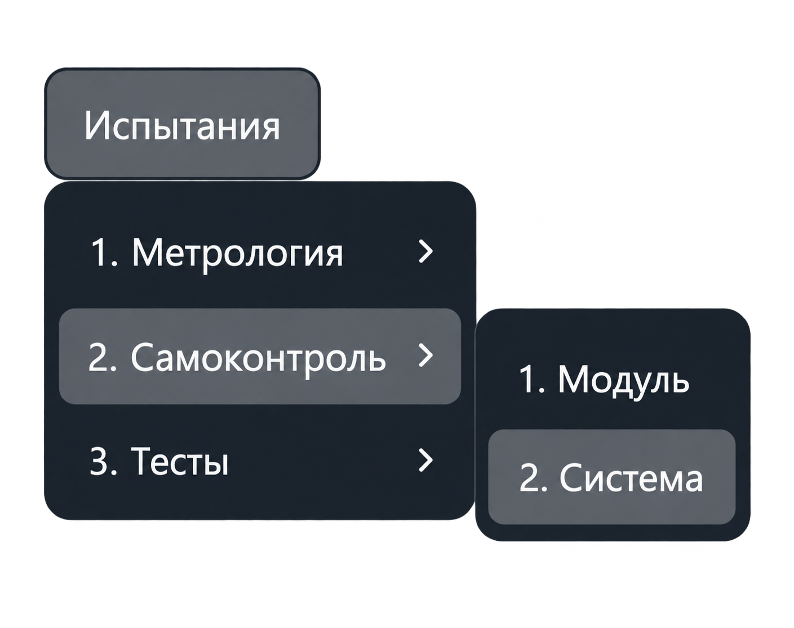
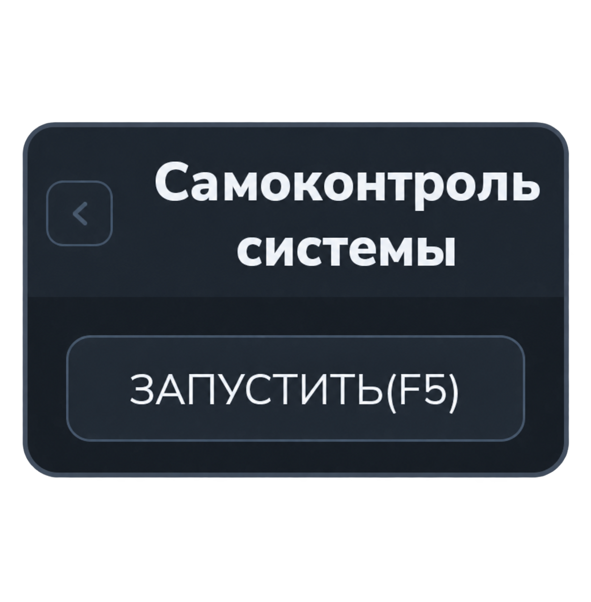

Самоконтроль системы
Предназначена для проверки работоспособности системы и входящих устройств.
- После выбора данного пункта появится кнопка "ЗАПУСТИТЬ" для запуска проверки работоспособности системы и входящих устройств.


Предназначена для проверки работоспособности системы и входящих устройств.

